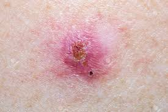
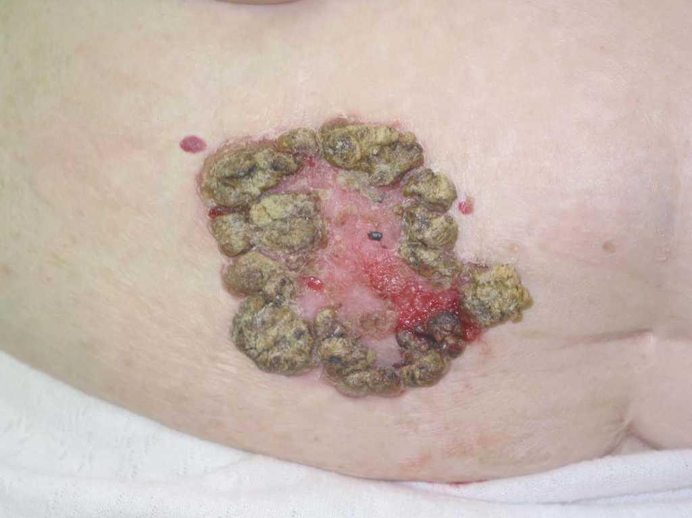
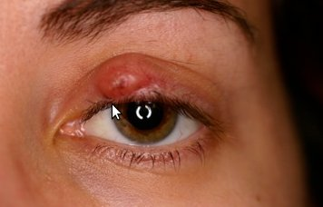

Onco Medic
Servicio médico oncológico
CONTACTO
- onco_med@gmail.com
- (+591) 76543210
- Santa Cruz, Bolivia
EQUIPO
- Fernando Quiroga - 213110881
- Daniela Vidal - 214058840
ONCO MEDIC
Es una herramienta que permite generar diagnósticos médicos para enfermedades oncológicas que afectan a la dermis de forma visible y que se pueden detectar con una evaluación externa.
Es una herramienta que permite generar diagnósticos médicos para enfermedades oncológicas que afectan a la dermis de forma visible y que se pueden detectar con una evaluación externa.


El cáncer de piel se manifiesta principalmente en las zonas de la piel más expuestas al sol, como el cuero cabelludo, el rostro, los labios, las orejas, el cuello, el pecho, los brazos y las manos, y, en el caso de las mujeres, las piernas. Pero también puede formarse en áreas que rara vez ven la luz del día: las palmas de las manos, debajo de las uñas de las manos o de los pies y el área genital.
El cáncer de piel afecta a personas de todos los tonos de piel, incluidas aquellas con tez más oscura. Cuando el melanoma ocurre en personas con tonos de piel oscuros, es más probable que ocurra en áreas que normalmente no están expuestas al sol, como las palmas de las manos y las plantas de los pies.
ENFERMEDADES DETECTABLES
-
Carcinoma de células basalesTipo UlcerosoPor lo general, los carcinomas de células basales se producen en áreas del cuerpo expuestas al sol, como el cuello o el rostro.
características:- - bulto ceroso o perlado
- - Una lesión plana, parecida a una cicatriz marrón
- - Úlcera con costras, sangrante que se cura y regresa
 -
Carcinoma espinocelularTipo EscamosoEn la mayoría de los casos, el carcinoma espinocelular se produce en áreas del cuerpo expuestas al sol, como el rostro, las orejas y las manos. Las personas con piel más oscura son más propensas a desarrollar carcinomas espinocelulares en áreas que generalmente no están expuestas al sol.
características:- - Un nódulo rojo y firme
- - Una lesión plana con una superficie escamosa y con costras
 -
Carcinoma sebáceoTipo AgresivoEl cáncer de piel ocurre cuando se producen mutaciones en el ADN de las células de la piel. Las mutaciones ocasionan un crecimiento fuera de control de las células y la formación de una masa de células cancerosas.
características:- - Engrosamiento de la piel del párpado
- - bulto en la piel que puede sangrar o tener una costra
 -
MelanomaTipo Agresivo/MortalEl melanoma puede formarse en cualquier parte del cuerpo, en la piel normal o en un lunar existente que se vuelve canceroso.Aparece con mayor frecuencia en el rostro o el tronco de los hombres afectados. En las mujeres, más a menudo se desarrolla en la parte inferior de las piernas. Tanto en los hombres como en las mujeres, el melanoma se puede producir en la piel que no ha sido expuesta al sol. En las personas con tonos de piel más oscura, el melanoma tiende a producirse en las palmas de las manos o las plantas de los pies, o bajo las uñas de los pies o las manos.
características:- - Un área grande y amarronada con pintitas más oscuras
- - Un lunar que cambia de color, tamaño o sensación, o que sangra
- - Una lesión pequeña con un borde irregular y partes que aparecen de color rojo, rosa, blanco, azul o azul oscuro
- - Lesiones oscuras en las palmas de las manos, las plantas de los pies, las yemas de los dedos de las manos o los pies, o en el recubrimiento de las mucosas de la boca, la nariz, la vagina o el ano